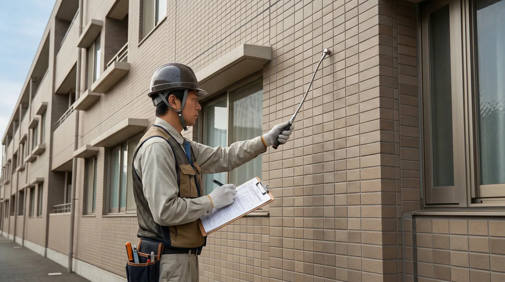
01
建築物診断調査
正しい診断が、正しい修繕につながる。
外壁のひび割れ・浮き・漏水など、建物の劣化状況を科学的に調査します。打診調査・目視調査・赤外線調査など、建物の状態に合った診断手法を選定。修繕の優先順位と概算費用を明確にし、無駄のない改修計画をご提案します。
九州の建物に、誠実な技術を。
外壁・防水・塗装。美翔は、現場から品質を作ります。
美翔は、2023年5月に福岡県で創業した建築改修の専門会社です。
外壁改修・防水・塗装・下地補修・シーリング・タイル・左官。建物の外皮を守るための工事を、一貫して手がけています。対応エリアは福岡を拠点に、九州全域と山口県。
創業してまだ日は浅い。だからこそ、一つひとつの現場で手を抜けない。そういう緊張感と誠実さを、私たちは強みだと思っています。
建物の劣化は、早期発見と適切な施工が最もコストを抑えます。私たちは「やっておけばよかった」と言われない仕事を、毎現場で目指しています。
私たちの仕事を見る
正しい診断が、正しい修繕につながる。
外壁のひび割れ・浮き・漏水など、建物の劣化状況を科学的に調査します。打診調査・目視調査・赤外線調査など、建物の状態に合った診断手法を選定。修繕の優先順位と概算費用を明確にし、無駄のない改修計画をご提案します。
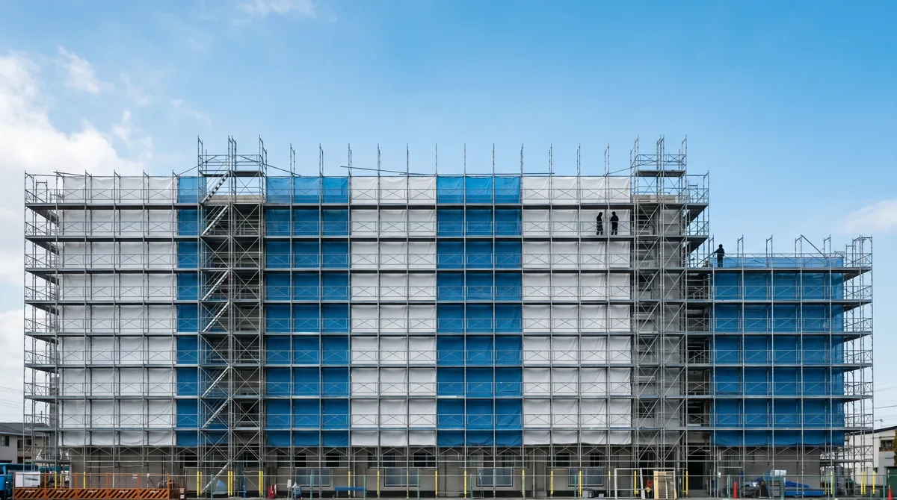
外壁は、建物の第一防衛線。
タイル浮き・爆裂・ひび割れなど、外壁の劣化は建物全体の寿命に直結します。診断結果をもとに、適切な工法・材料を選定して施工。美観の回復だけでなく、構造体を守る本質的な改修を行います。
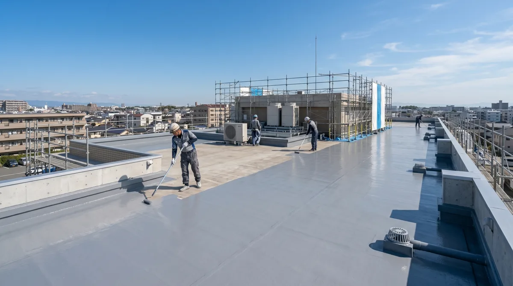
水を止めることは、建物を守ること。
屋上・ベランダ・開口部廻りなど、水が浸入しやすい箇所に専門の防水処理を施します。ウレタン防水・シート防水・FRP防水など、部位と用途に応じた工法を選択。雨水による内部劣化を根本から防ぎます。
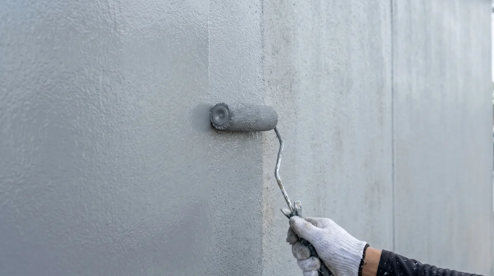
正しく塗ることが、10年後の差になる。
素地調整・下塗り・中塗り・上塗りの工程を丁寧に積み重ね、耐候性と美観を両立します。外壁・屋根・鉄部など、部位に応じた塗料と工法を選定。塗り替えのタイミングと材料選びをご一緒に検討します。
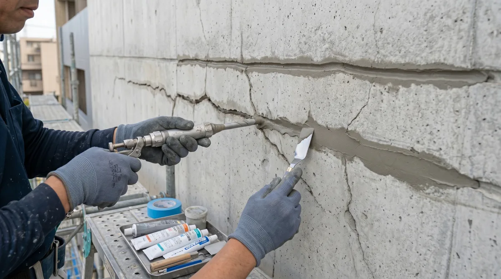
仕上げより先に、下地を正直に直す。
ひび割れ・欠損・浮きなど、コンクリートや下地材の損傷部位を修復します。下地が健全でなければ、どれほど良い仕上げ材を使っても効果は半減します。補修材の選定から施工まで、見えない部分を妥協なく整えます。
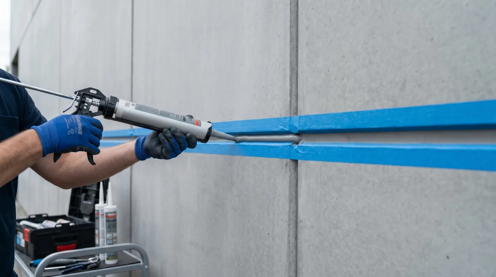
目地の隙間が、雨水の入口になる。
外壁の目地・サッシ廻り・開口部廻りのシーリング材を打ち替え・増し打ちします。シーリング材の劣化（ひび割れ・収縮・剥離）は雨水浸入の主要因。適切な材料選定と丁寧な施工で、長期の止水性能を確保します。
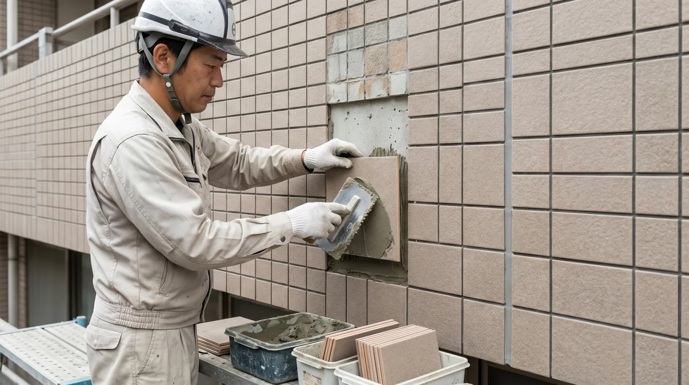
浮き・剥落は、未然に防ぐのが正解。
外壁タイルの浮き・ひび割れ・剥落を補修・貼り替えします。タイル剥落は通行人への危険にもつながるため、定期的な打診調査と予防的補修が重要です。新設・貼り替え・部分補修まで、状態に応じた対応を行います。
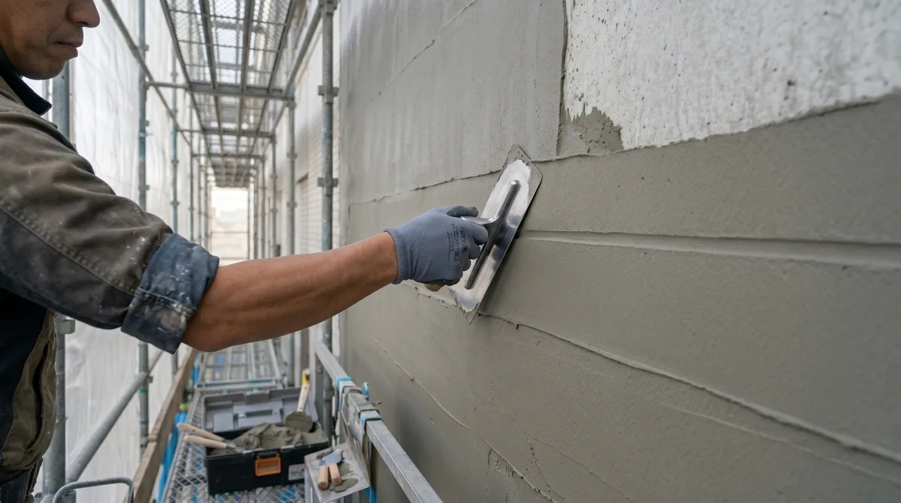
手で仕上げる、最後の一層。
コンクリート・モルタルの欠損補修、仕上げ塗りを手作業で行います。機械では届かない細部や複雑な形状の部位こそ、左官職人の技術が問われます。補修箇所が周囲になじむよう、仕上げの精度にこだわります。
外壁改修・防水・塗装の施工写真を公開しています。どんな劣化が、どのような施工でどう変わるか。写真でご確認ください。
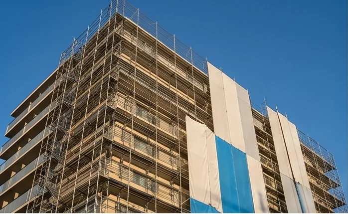
外壁改修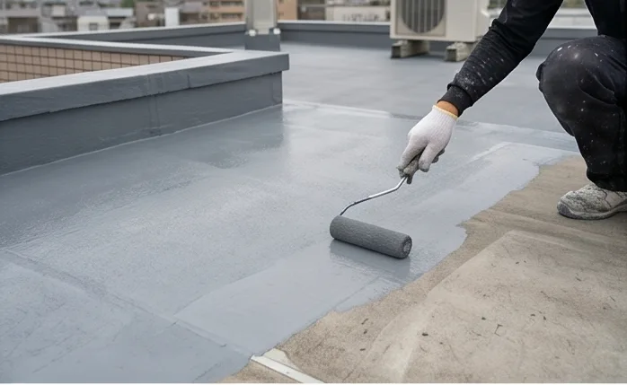
防水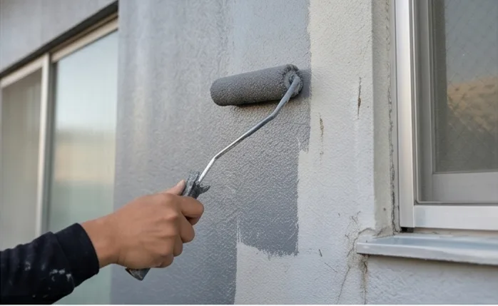
塗装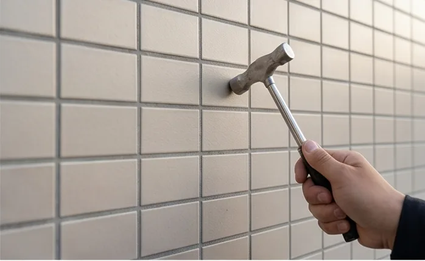
タイル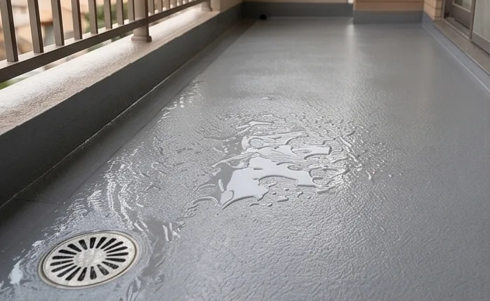
防水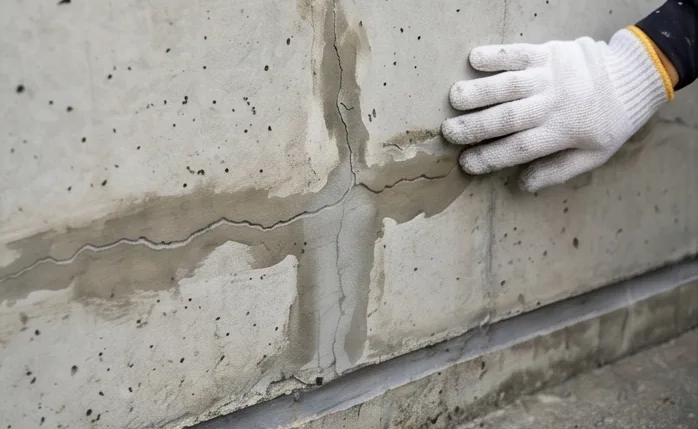
外壁改修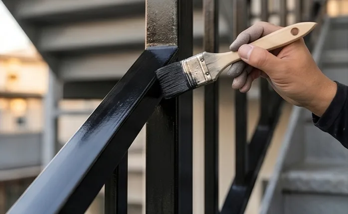
塗装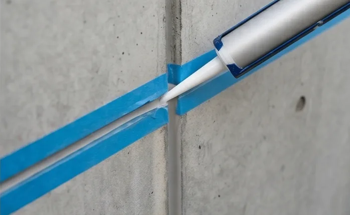
その他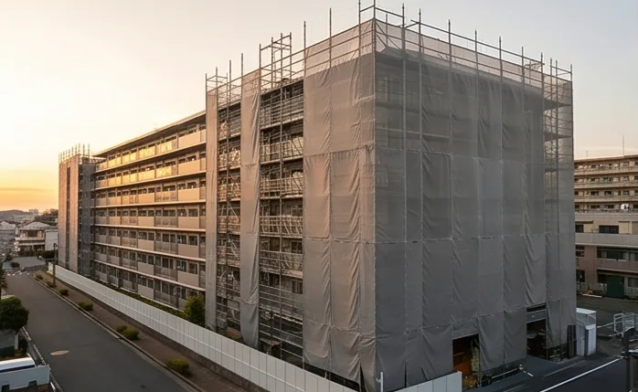
外壁改修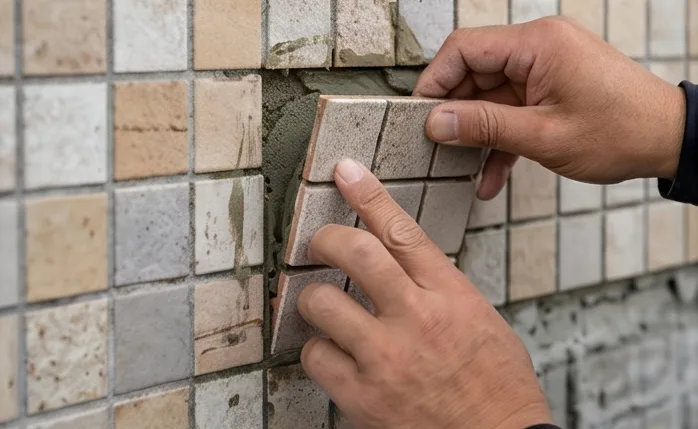
タイル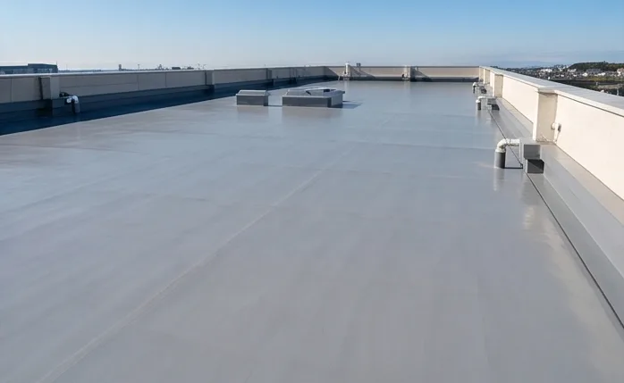
防水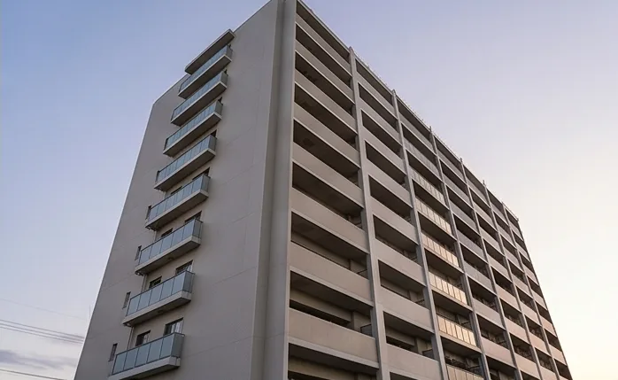
塗装美翔は2023年創業の若いチームです。建設の知識がゼロでも、仕事の仕方からしっかり教えます。「手に職をつけたい」「九州で長く働きたい」という方に、まじめに向き合います。
代表含め若いメンバーが多く、現場の雰囲気はフラット。上下関係より仕事の質を重視します。
創業期だからこそ、一人ひとりに任される仕事が多い。経験を積むスピードは、大きな組織より速い。
外壁改修・防水・塗装・シーリングなど、建築改修の多領域を現場で学べます。各種施工資格の取得を会社がサポート。
福岡を拠点に、九州全域・山口県を対応エリアとしています。地元で、長く働ける仕事です。
| 職種 | 雇用形態 | 経験 |
|---|---|---|
| 外壁改修・塗装施工スタッフ | 正社員 / アルバイト | 未経験歓迎 |
| 防水施工スタッフ | 正社員 / アルバイト | 未経験歓迎 |
| 現場補助スタッフ | アルバイト | 未経験歓迎 |
※ 具体的な条件・待遇はお問い合わせ時にお伝えします。
| 社名 | 美翔 |
|---|---|
| 代表 | 坂口 志磨 |
| 創業 | 2023年5月 |
| 所在地 | 福岡県糟屋郡志免町片峰1丁目6-11 ソシア206号 |
| 電話 | 080-3997-5935 |
| 営業時間 | 平日 9:00 〜 18:00 |
| 対応エリア | 福岡県・佐賀県・長崎県・熊本県・大分県・宮崎県・鹿児島県・山口県 |
| 主な事業 | 建築物診断調査・外壁改修工事・防水工事・塗装工事・下地補修工事・シーリング工事・タイル工事・左官工事 |
福岡県糟屋郡志免町片峰1丁目6-11 ソシア206号
外壁改修・防水工事の無料診断はこちら。建物の劣化が気になる、修繕の時期が来ているかもしれない。そういうご相談から、私たちはお受けします。現地診断は無料です。まずはお電話またはフォームでご連絡ください。
内容を確認のうえ、担当者より2営業日以内にご連絡いたします。
お急ぎの場合は、お電話でご連絡ください。
受付時間: 平日 9:00 〜 18:00